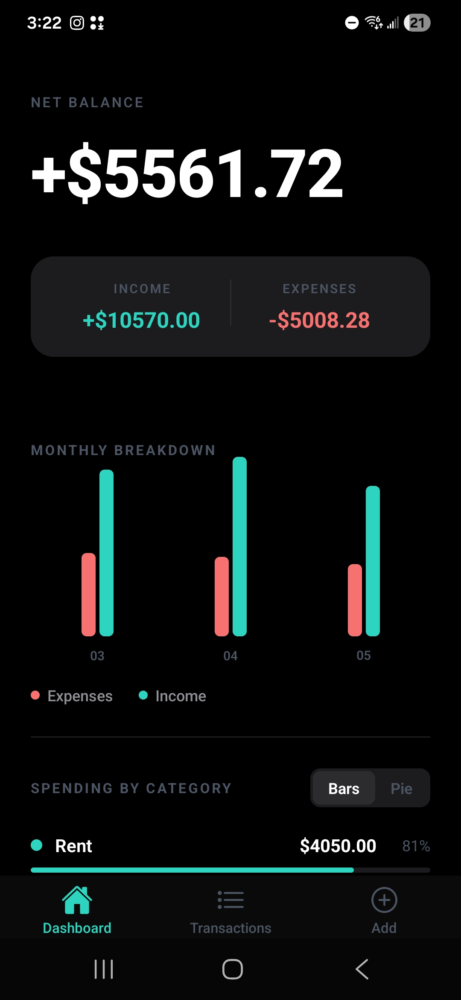
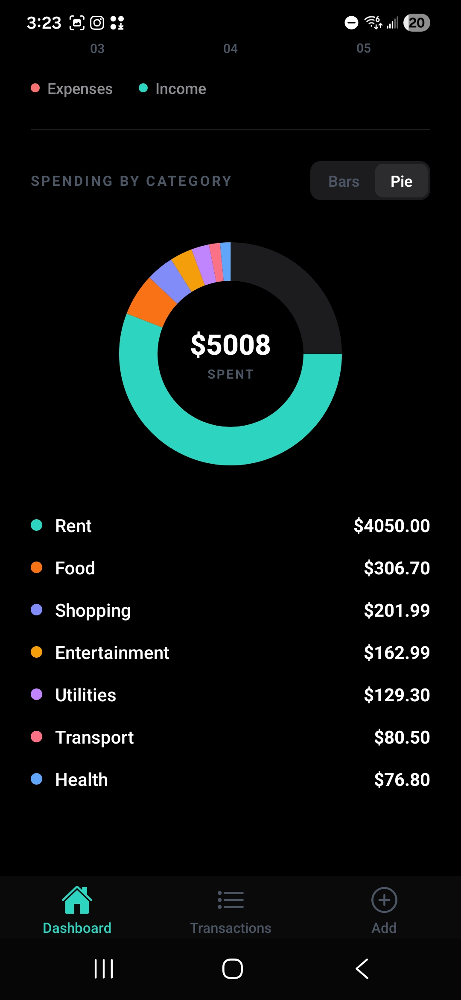
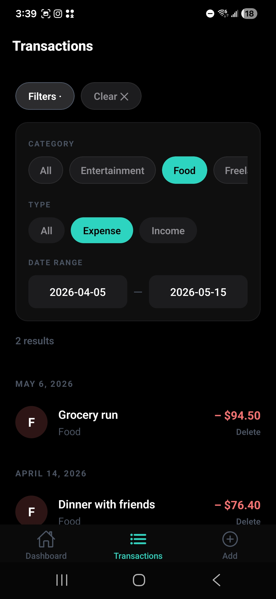
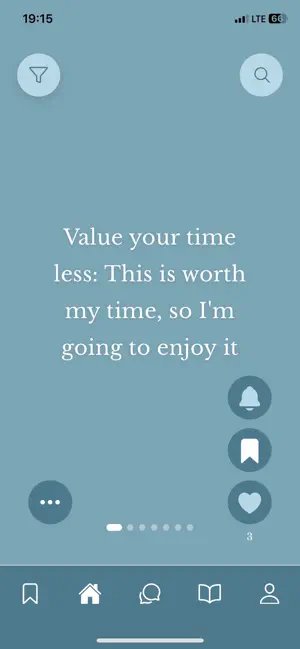
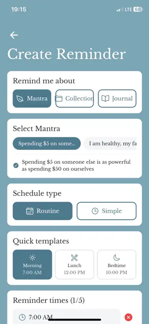
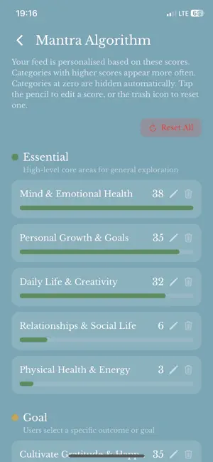

Software Engineering Student — Concordia University
I build full-stack applications and systems with a focus on clean architecture and practical results. Currently finishing my B.Eng. in Software Engineering, expected Fall 2026.
Solo-built Android finance tracker with income/expense categorisation, monthly bar charts, and a net balance summary. REST API backed by Node.js/Express and PostgreSQL on Neon, deployed on Render. OTA updates shipped via Expo EAS without reinstallation.
View on GitHub →


Co-developed a mental wellness mobile app in an 11-person Agile team across a full academic release cycle. Architected the core tab navigator and integrated frontend with backend RESTful APIs. Led a database migration from Oracle to PostgreSQL and contributed CI/CD pipelines with Docker and SonarQube.
View on GitHub →

